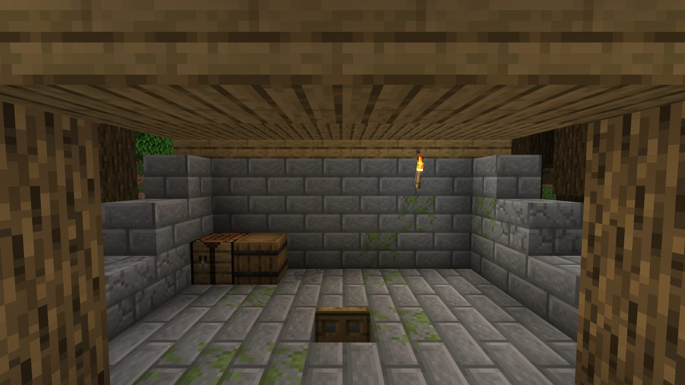

A standalone NeoForge mod that adds The Remembering: a copy of your own world, cut into endless office floors, with something inside that can't decide what it is.
The builders who made the ancient cities and the strongholds tried one last fix: a machine that reaches into the world's memory of itself. It woke the memory instead. The story is never told in text. You learn it by playing: by the places, the objects, the sounds and the rules of the place.
This wiki is the other way round: it tells you everything plainly. If you would rather find things out for yourself, stop at Getting started.

Find the hatch
A stone hatch under an oak lean-to leads down into the Buried Works, the builders' lab.

Open the door
Rebuild the broken Reinforced Iron frame, give it redstone, and step through.

Walk out
The room on the other side is the same room. Walk out of it, and it isn't.
What is in the mod#
- The Remembering, a new dimension: your world at the same coordinates, remembered floor upon floor, from overworld floors down through Nether and End floors to a geometric level, all one vertical loop.
- Reinforced Iron and the Gateway: a door frame of any shape that opens when it gets a redstone signal. Doors work in every dimension, both ways.
- The Keeper, the one hunter inside. It stalks, drags you away, and can only be fought once you build it a body.
- Vivid mobs, Hollow mobs and Still Lifes: mobs and players remembered wrong.
- Buried Works: a rare underground lab, as rare as strongholds, where the story starts.
- Memarium, the only metal The Remembering makes, with tools, armor and a trim material; plus the Memento, Snapshot and Memory Anchor, and the Punch Clock to respawn inside.
- Insanity, with the Potions of Memory, Insanity and Sanity.
- Lamps that stay lit or flicker without power, settled blocks, four pottery sherds, the Builder Armor Trim, the Shape painting, the music disc Day One, four enchantments, new sounds and music, and advancements that follow the story.
Getting started#
A path from a fresh world to the Keeper. Every step links to its page.
- Find a Buried WorksThey are about as rare as strongholds. Buy a Buried Works Map from a journeyman cartographer (13 emeralds and a compass), or explore. On the surface there is only a stone hatch under an oak lean-to.
- Go down and find the machine hallBehind one of the hub's four doors, sometimes further on, is the builders' last machine: a broken Reinforced Iron frame with the Backrooms pouring out of it. The chest beside it holds four Reinforced Iron and a Remembered Upgrade.
- Close the frame and power itFill the gaps so the frame is whole, then give any frame block a redstone signal. It flickers on for 2.5 seconds and opens.
- Walk throughYou come out in the same room, copied into The Remembering. Walk out of it. Bring food and light; the lamps are not always on.
- Learn the rulesBlocks there are copies that drop nothing. Find Memarium and make Memarium tools to cut it. Watch your insanity and rest in refuges.
- Survive the KeeperAfter ten minutes inside, something starts following you. The Keeper only moves while you are not looking.
- Give it a shapeTake a Still Life apart for its head, build the head on a T of Blocks of Memarium inside The Remembering, and fight it. Beat it for a Settled Heart.
Always know the way out
Anyone can type /backrooms leave to go back to the overworld (by the door you came in through, if there is one). It has a cooldown of 10 minutes by default. On a server, ops can change it in the config.
Updating from 2.0.0#
This update replaces the old dimension
3.0.0 removes the old Backrooms dimension (The Complex) and starts it fresh as The Remembering. Your world still loads, and your overworld, items and Memarium carry over. Anyone who logged out inside the old dimension comes back to the overworld with a message. The old dimension's chunks are moved to dimensions/backrooms/the_complex_2.0_backup in your world folder, nothing is deleted. Old iron-frame portals no longer open: build a Reinforced Iron frame instead.
Requirements#
- Minecraft
- Java Edition 1.21.1
- Loader
- NeoForge 21.1.0 or newer
- Java
- 21
- Other mods
- None needed. Works with Immersive Portals, Sodium, Iris and shader packs, Distant Horizons and more; see FAQ and compatibility.
- Multiplayer
- Install on the server and on every client.